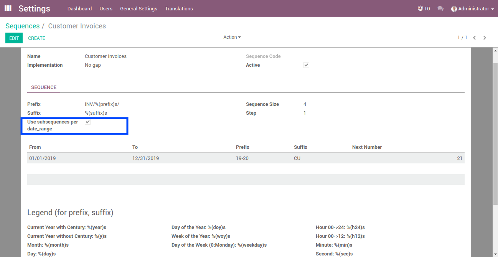
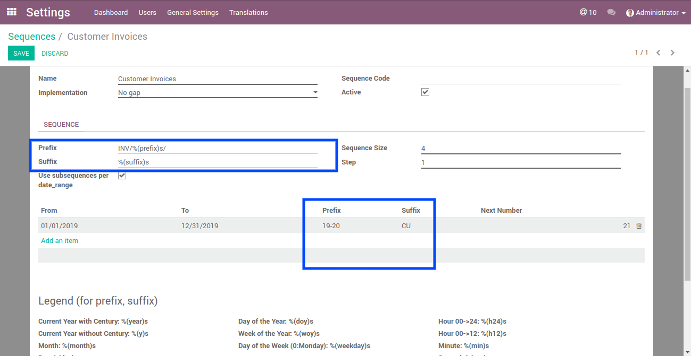
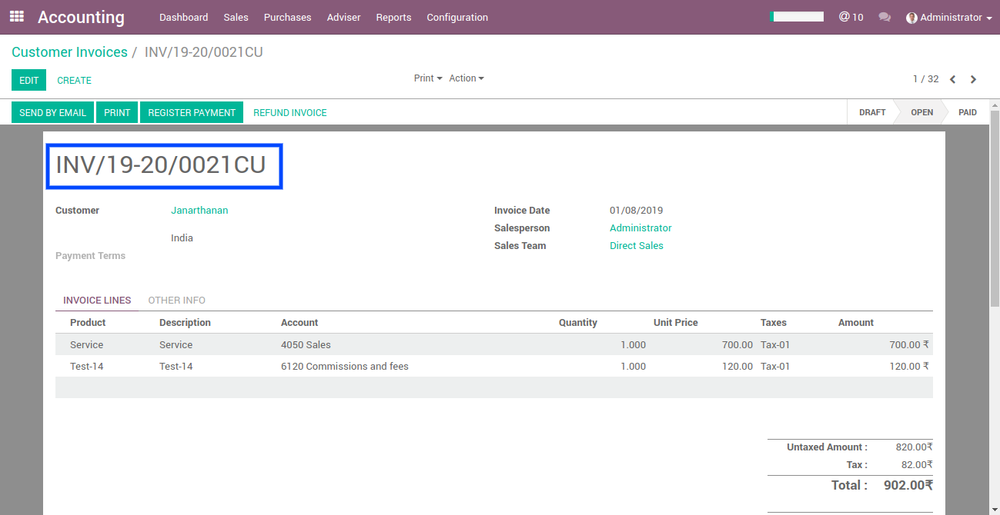

Fiscal year sequence extensible module allows to change sequence of any object based on date range. if customer wants to track sequence period based on some prefix or suffix sequence, it can be enabled in sequence form where "Use subsequences per date_range" must be checked and prefix and suffix are set.
By installing this module which allows the user to add prefix and suffix for date periods in objects sequence.
Open sequence form and enable "Use subsequences per date_range"
Date period page will be visible and create date period with prefix and suffix. you can add prefix and suffix code in sequence page e.g: INV/%(prefix)s/.
Open form and view the sequence number which has been changed based on period.
